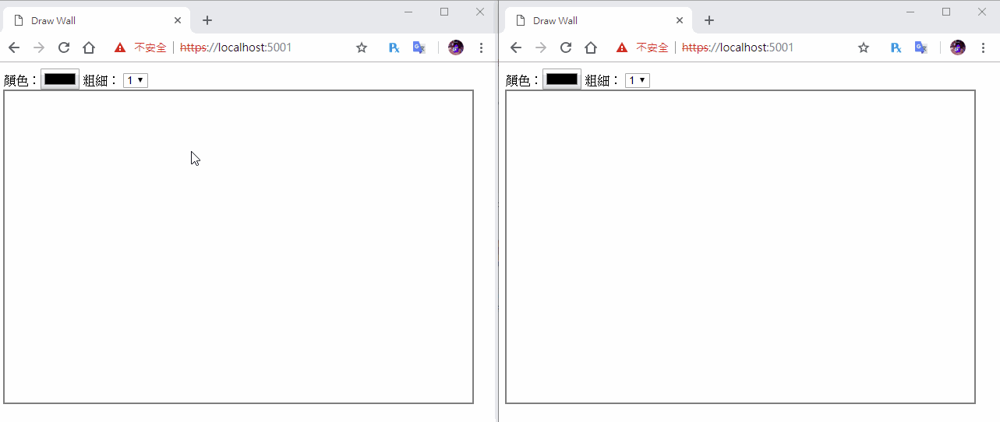

[鐵人賽Day13] 實作一個共用塗鴉牆 (2) - signal同步畫板
文章目錄
今天要來做塗鴉牆第2部分，首先我們得想想該回傳些什麼，制定一個Json格式回傳回去。
前端部分
連接部分程式碼先寫好
var connection = new signalR.HubConnectionBuilder().withUrl("/drawHub").build();
// 連接事件
connection.start().catch(function (err) {
return console.error(err.toString());
});
再來我們要制定一下回傳的Json格式
制定回傳Json格式
從昨天的程式碼來看，我們需要起始位置、結束位置、顏色、線條粗細，大概像下面這樣。
{
"startPos": [10, 20],
"endPos": [40, 50]],
"color": "orange",
"lineWidth": 10
}
在mousermove時回傳資料給Server
每次畫線時都要回傳給Sever，所以要寫在mousermove裡面，回傳格式使用上面的Json格式
connection.invoke("SendDraw", {
"startPos": tempPos,
"endPos": newPos,
"color": ctx.strokeStyle,
"lineWidth": ctx.lineWidth
}).catch(function (err) {
return console.error(err.toString());
});
註：記得要寫在
tempPos = newPos;之前，不然更新tempPos之後就不知道前一個位置了
接收事件則是接收後直接在Canvas上畫圖，也就是重複了mousemove裡面做的動作
connection.on("ReceiveDraw", function (json) {
ctx.strokeStyle = json.color;
ctx.lineWidth = json.lineWidth;
ctx.beginPath();
ctx.moveTo(json.startPos[0], json.startPos[1]);
ctx.lineTo(json.endPos[0], json.endPos[1])
ctx.closePath();
ctx.stroke();
});
後端部分
我們先建立一個Models資料夾，裡面要用來裝我們建立的Json格式
建立DrawModel容器
在Models建立一個檔案DrawModel，用來裝Json格式
using System;
namespace DrawWall.Models
{
public class DrawModel
{
public int[] startPos { get; set;}
public int[] endPos { get; set;}
public string color { get; set;}
public int lineWidth { get; set;}
}
}
注意
startPos和endPos是數字陣列
建立DrawHub
在建立一個DrawHub，內容很簡單也只要把接受到的Json資料再傳給所有人就行
using Microsoft.AspNetCore.SignalR;
using System.Threading.Tasks;
using DrawWall.Models;
namespace DrawWall.Hubs
{
public class DrawHub : Hub
{
public async Task SendDraw(DrawModel drawData)
{
await Clients.All.SendAsync("ReceiveDraw", drawData);
}
}
}
還有Starup.cs記得註冊DrawHub和SignalR
public void ConfigureServices(IServiceCollection services)
{
services.AddSignalR();
}
public void Configure(IApplicationBuilder app, IHostingEnvironment env)
{
if (env.IsDevelopment())
{
app.UseDeveloperExceptionPage();
}
app.UseDefaultFiles();
app.UseStaticFiles();
app.UseSignalR(routes =>
{
routes.MapHub<DrawHub>("/drawHub");
});
}
最後記得加入前端的signal套件，這樣就完成了
Demo
